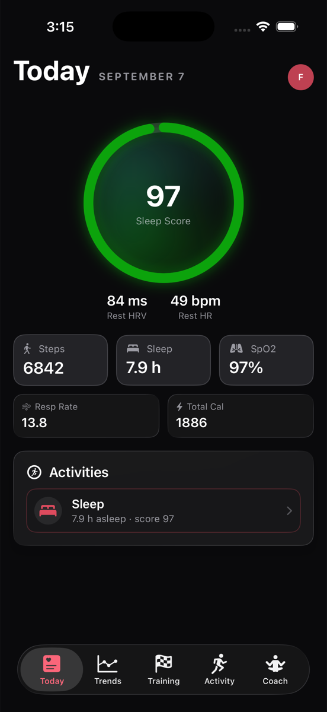
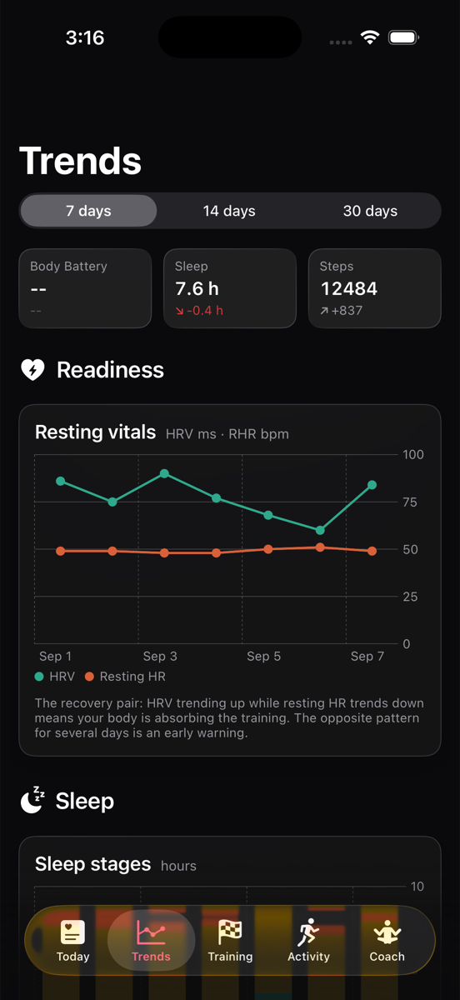
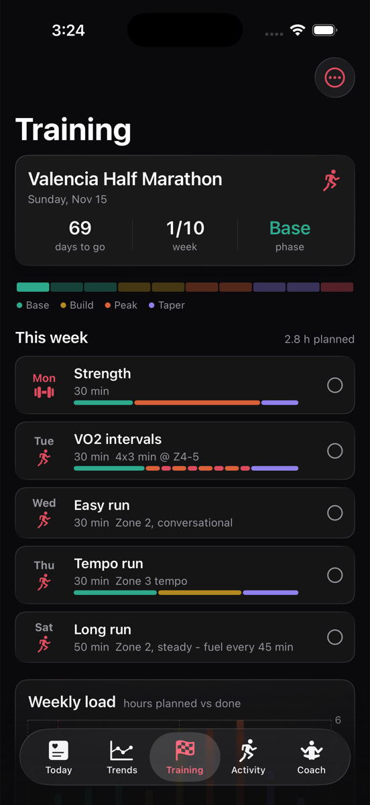
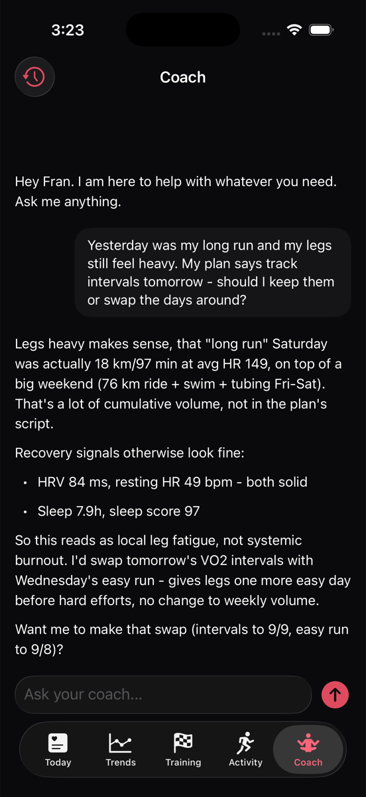
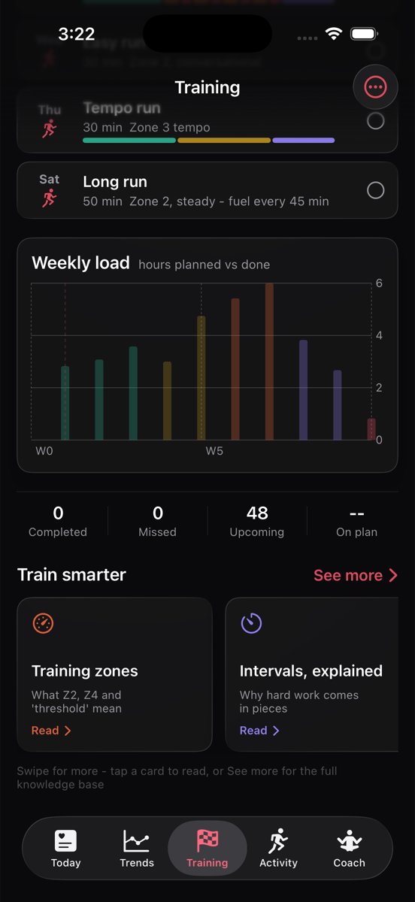
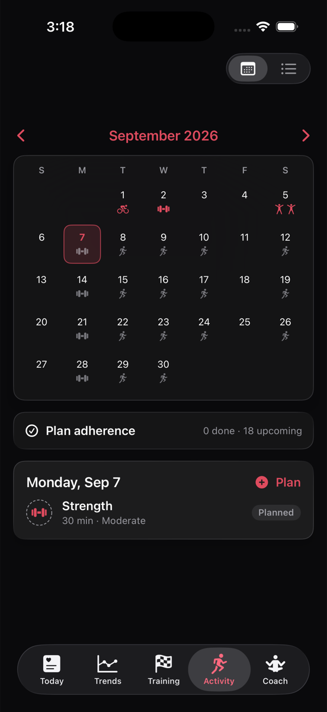
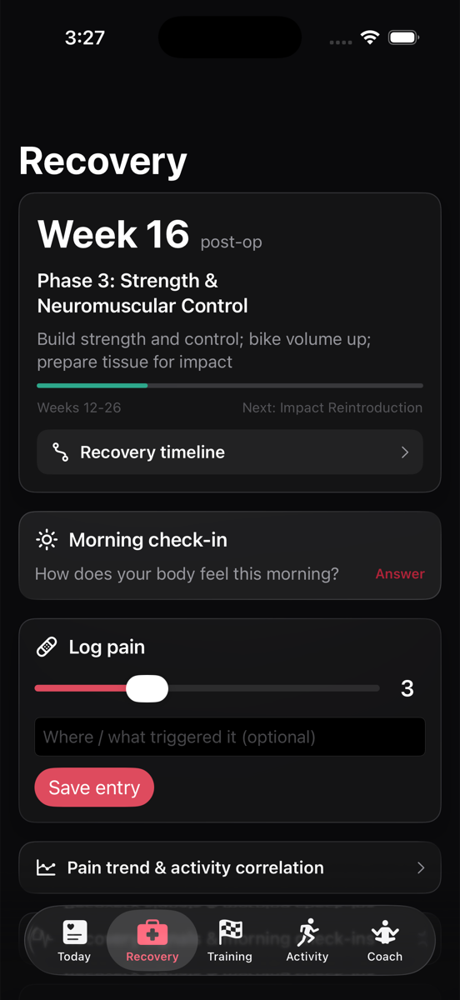
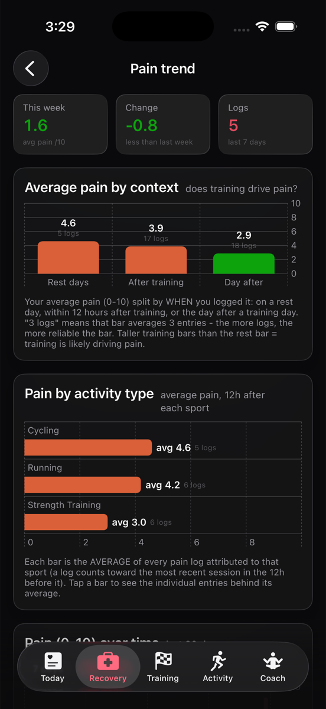
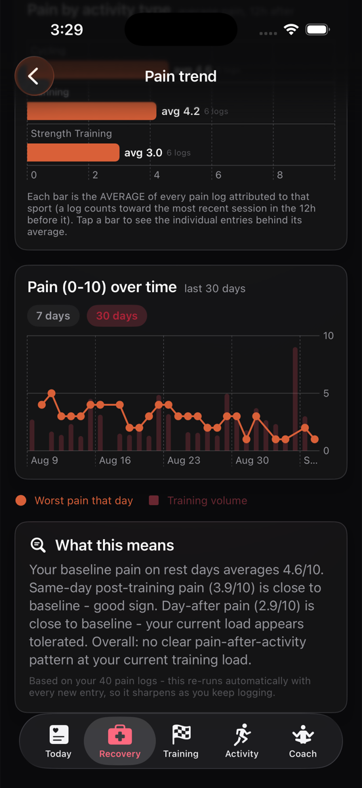

Recover smarter.
Train harder.
Rebuild turns the data your watch already collects - sleep, HRV, resting heart rate, training load - into a daily readiness picture, structured training plans, and coaching that actually knows you.
Request beta access See the app Built for triathletes, runners, and hybrid athletes - including the ones coming back from injury.
One app for the whole athlete
Rebuild started as a personal project: an app to guide one athlete's return to sport after knee surgery, using nothing but the data his watch was already recording. It grew into a full recovery and training platform.
Daily readiness
Sleep score, HRV, resting heart rate, and last night's sleep stages in one glance, so you know whether today is a day to push or a day to absorb.
Trends that mean something
Recovery pairs like HRV vs resting HR, sleep stages, and training load over 7, 14, or 30 days, with plain-language explanations under every chart.
Structured training plans
Race-day plans for triathlon, running, and hybrid events: periodized weeks, zone targets, fueling cues, and a calendar that tracks adherence.
Return-to-sport guardrails
Post-injury programs with checkpoints that flag when the day's recovery data suggests backing off, so rehab does not turn into re-injury.
An AI coach that knows you
Ask anything. The coach answers from your actual workouts, sleep, and plan - and can reshuffle your week when your legs disagree with the schedule.
Learn as you train
A built-in knowledge base on zones, intervals, fueling, strength, and periodization, sourced and cited, one tap from your plan.
See it in action
Screenshots from the current beta, shown with sample data.

Trends
The recovery pair at a glance: HRV up, resting HR down means the training is landing.

Training plans
A ten-week half marathon build: base, build, peak, taper, and every session zoned.

AI coach
Grounded in your data: it saw the long run, checked your HRV and sleep, and offered to reshuffle the week.

Weekly load
Planned vs completed hours across the whole plan, colored by phase.

Calendar and adherence
Every planned session on a calendar, with adherence tracked as you complete them.
Today
Your morning report: sleep score, HRV, resting HR, and the day's activity as it builds.
Rehab with data, not guesswork
Users recovering from surgery or injury get a dedicated Recovery hub: phase-based protocols, morning check-ins, pain logging, and an honest analysis of whether training is driving pain.

Recovery hub
Where you are in your protocol, what this phase is for, and a ten-second pain log.

Does training drive pain?
Every pain log is bucketed by context: rest day, after training, or the day after. The charts answer the question your PT keeps asking.

Pain vs load, over time
Pain plotted against training volume, with a plain-language conclusion that sharpens with every log.
Built on the watch you already wear
Rebuild reads the metrics your devices already record, with your explicit permission, and uses them for one thing only: powering your own dashboard, plans, and coaching.
Private by default
Your data is encrypted in transit and at rest, never sold, and never shared with advertisers. Connections use each vendor's official consent flow, you can disconnect at any time, and deleting your account erases everything. Read the full privacy policy.